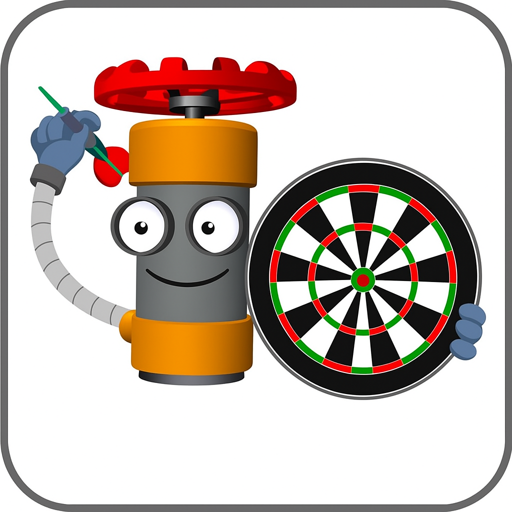
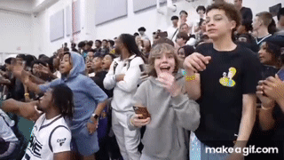
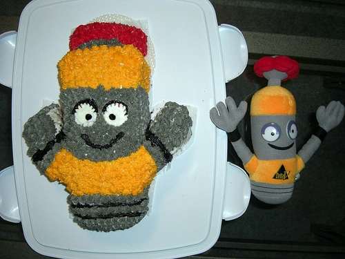

Dartcounter V1.6.7.1
🌙
Licht / Donker
➕ Speler toevoegen
↩ Herstel laatste
■ Stop / Exit
Kies spelmodus:
🎯
Single player
👥
Teams
📊
Statistieken
Instellingen
Aantal spelers (max 10):
Legs te winnen:
← Terug
Volgende →
Stop spel
Herstel laatste invoer
—
1
2
3
4
5
6
7
8
9
✕
0
✓
↩ Herstel
■ Stop